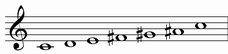
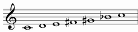
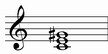
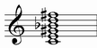
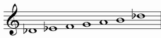

| GRADE | NAME | NOTES |
| I | WHOLE-TONE |  |
WHOLE-TONE |
Alternative names: Exatonic, Anemitonic
Structure: 222222
Enharmonic interpretation:

| chords over first notes: | ||
| Triad: | Seventh chord: | Complete Chord: |
| augmented | dominant with augmented fifth | |
|  | |
 |
Chord simbols: C+, C7(#5), C9(#5), C9(#5 #11)
Enharmonic chord simbols: C7(b5)
There are only 2 transposition of this mode:

every other trasposition contains the same (or enharmonic) notes of one of theese.